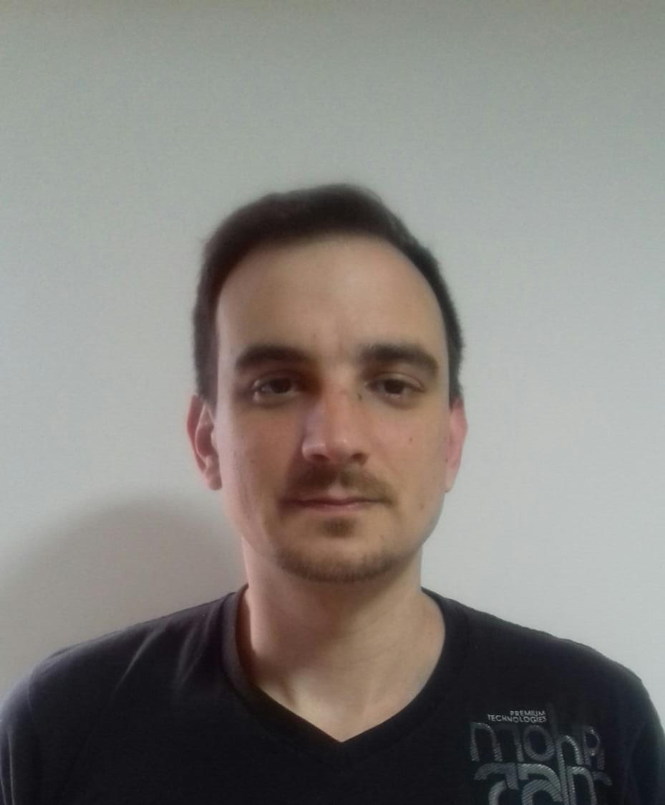

|  |
Matías RinaldiIngeniero en Materiales, becario de maestria en física tecnológica en el Instituto Balseiro. Soy ingeniero en Materiales recibido del Sabato dependiente de la Comisión Nacional de Energía atómica. Actualmente soy beneficiario de una beca de maestría otorgada por el ministerio de Defensa Argentino en el Instituto Balseiro en la ciudad de Bariloche. Mi lugar de trabajo es el Centro Atómico de Bariloche en el Departamento de Caracterización de materiales y el tema de mi tesis es el desarrollo de una plaaforma de testeo para stacks de celdas de combustible de óxido sólido. |
| Fecha | Experiencia |
|---|---|
| 2021-2023 | Becario en Departamento de Caracterización de materiales CAB - CNEA |
| 2019-2021 | Becario en el Departamento de Micro y nano fabricación CAC - CNEA |
| 2018 | Profesor de cursos para CBC en Instituo Mayor |
| 2018 | Dictado de Taller de tecnología en Colegio Aequalis |